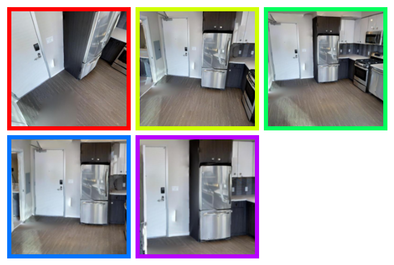
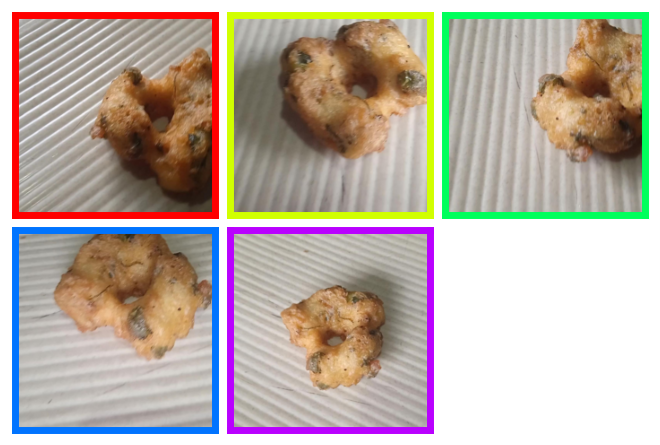
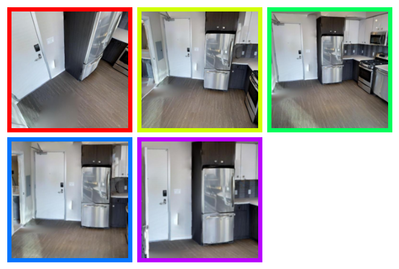
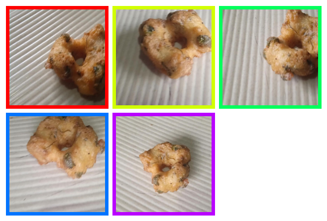
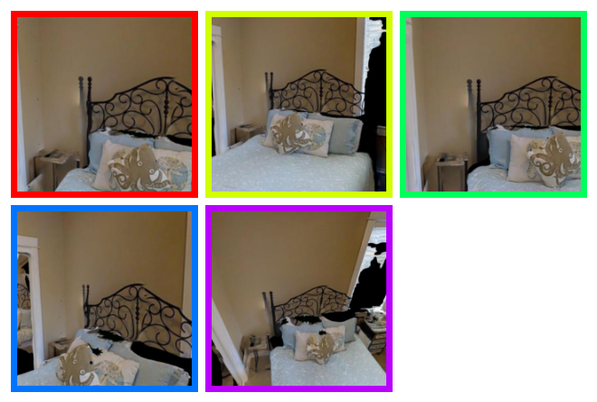
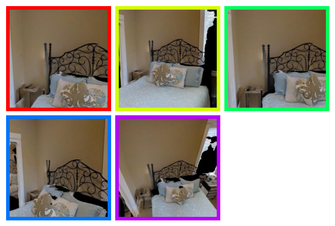

Current Structure-from-Motion (SfM) methods typically follow a two-stage pipeline, combining learned or geometric pairwise reasoning with a subsequent global optimization step. In contrast, we propose a data-driven multi-view reasoning approach that directly infers 3D scene geometry and camera poses from multi-view images. Our framework, DiffusionSfM, parameterizes scene geometry and cameras as pixel-wise ray origins and endpoints in a global frame and employs a transformer-based denoising diffusion model to predict them from multi-view inputs. To address practical challenges in training diffusion models with missing data and unbounded scene coordinates, we introduce specialized mechanisms that ensure robust learning. We empirically validate DiffusionSfM on both synthetic and real datasets, demonstrating that it outperforms classical and learning-based approaches while naturally modeling uncertainty.
Given sparse multi-view images as input, DiffusionSfM predicts pixel-wise ray origins and endpoints in a global frame using a denoising diffusion process. For each image, we compute patch-wise embeddings with DINOv2 and embed noisy ray origins and endpoints into latents using a single downsampling convolutional layer, ensuring alignment with the spatial footprint of the image embeddings. We implement a Diffusion Transformer architecture that predicts clean ray origins and endpoints from noisy samples. A convolutional DPT head outputs full-resolution denoised ray origins and endpoints. To handle incomplete ground truth (GT) during training, we condition the model on a GT mask. At inference, the GT mask is set to all ones, enabling the model to predict origins and endpoints for all pixels. The predicted ray origins and endpoints can be directly visualized in 3D or post-processed to recover camera extrinsics, intrinsics, and multi-view consistent depth maps.
 



 


On the left, we report the proportion of relative camera rotations within 15° of the ground truth. On the right, we report the proportion of camera centers within 10% of the scene scale. To align the predicted camera centers to ground-truth, we apply an optimal similarity transform, hence the alignment is perfect at N=2 but worsens with more images. DiffusionSfM outperforms all other methods for camera center accuracy, and outperforms all methods trained on equivalent data for rotation accuracy.

Top: Chamfer Distance (CD) computed over all scene points. Middle: CD computed on foreground points only. Bottom: Percentage of predicted focal lengths within 15% of the ground truth. RD+MoGe refers to the Ray Diffusion camera pose, with depth estimates from MoGe aligned to the ground truth. DUSt3R-CO3D is trained solely on CO3D, while DUSt3R-all is trained on multiple datasets. DiffusionSfM outperforms all methods in terms of full scene geometry and estimated focal length, and also outperforms both RD+MoGe and DUSt3R-CO3D on foreground geometry.

DiffusionSfM shows superior capabilities in handling challenging samples, e.g., the skateboard and tennis ball. Additionally, while we observe that DUSt3R-all can predict highly precise camera rotations, it often struggles with camera centers (see the keyboard and backpack examples).